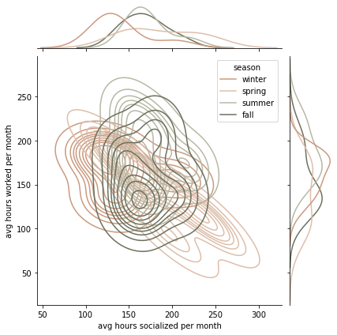

kayla huang
senior @ harvard studying cs + government
silly little pictures
jan 31, 2023
the days are long and the years are short.
hourly data averaged on a weekly basis. some weeks i found myself with more or less than 24 hours per day (on average) due to overlapping or missing events.
what about a classic histogram?
messy, messy. let's try stacked:
a little better.
jan 29, 2023
comparing the distributions of my time (per month) spent socializing and working as categorized by season. (viz inspo: jeff wang)

jan 13, 2023
for the last three years, i've been logging everything i do in my google calendar. finally took a closer look at this data to see how i've been living my life. the following is a heatmap of how many hours i worked a day in the last two years.

seems like junior fall, 2022 fall, was the biggest grind. socially, summers and weekends are hotter, to the surprise of no one.

and some random area chart comparing the two directly.

not the most interesting insights—still trying to see what else i can squeeze out of this.
dec 4, 2022
learning how to use cambridge public data and gis/geopandas. simple map of voter turnout in cambridge through the 2006, 2010, and 2014 state elections.

same deal for presidential elections in those three years, but i don't quite like the scaling.
funny that the comparative percentages are almost identical, though. also note that the white patches correspond roughly to harvard and mit. curious.
dec 4, 2022
got curious about my spotify listening habits over the years (streams/day)